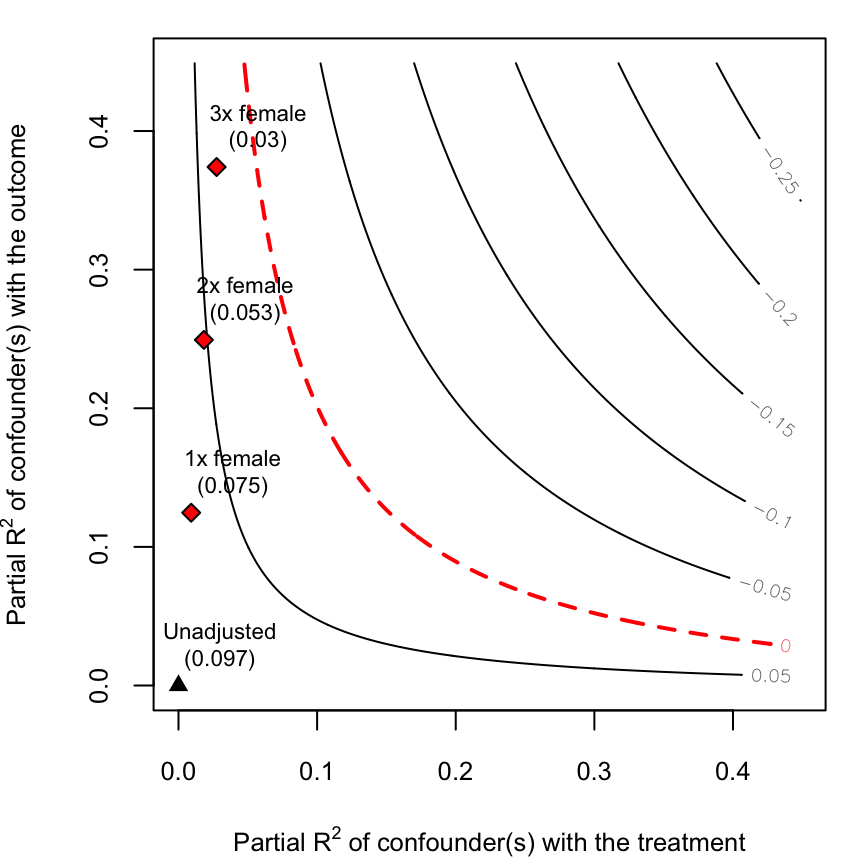
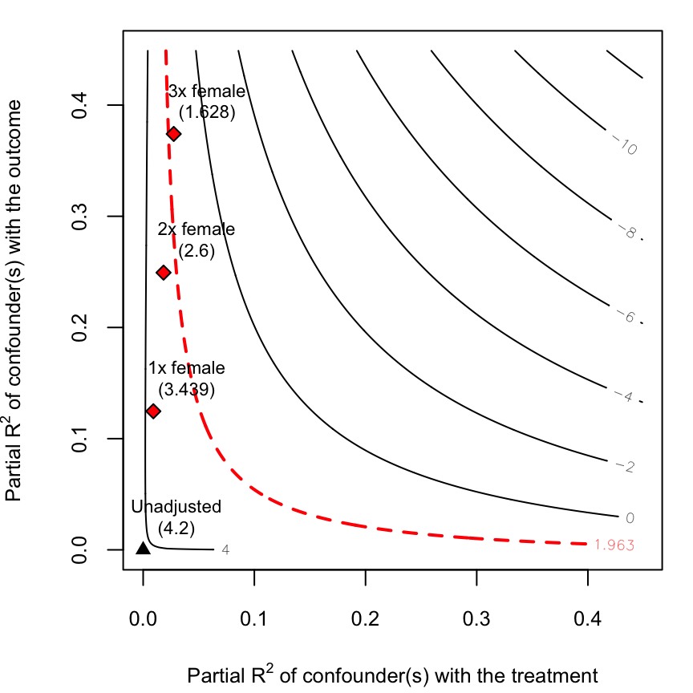
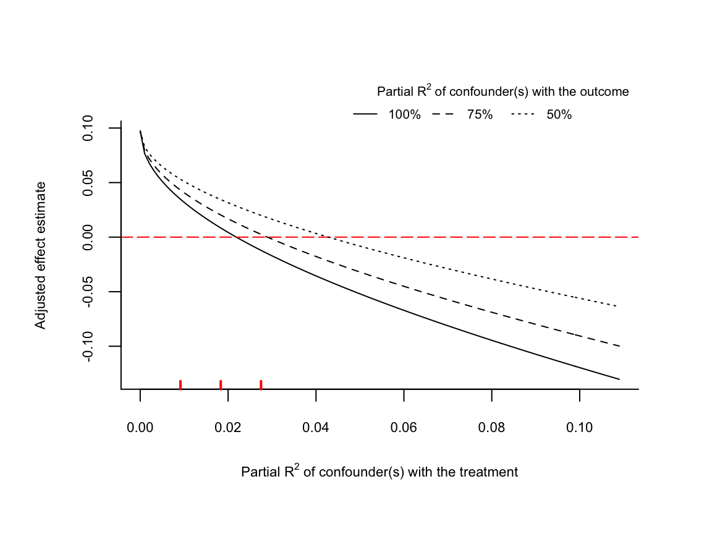
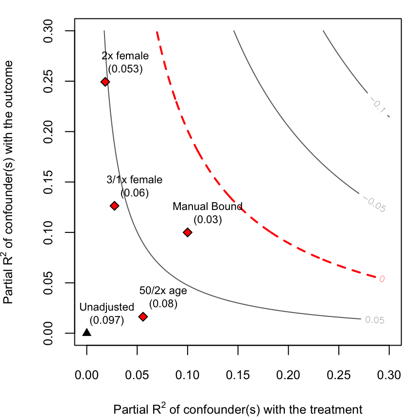
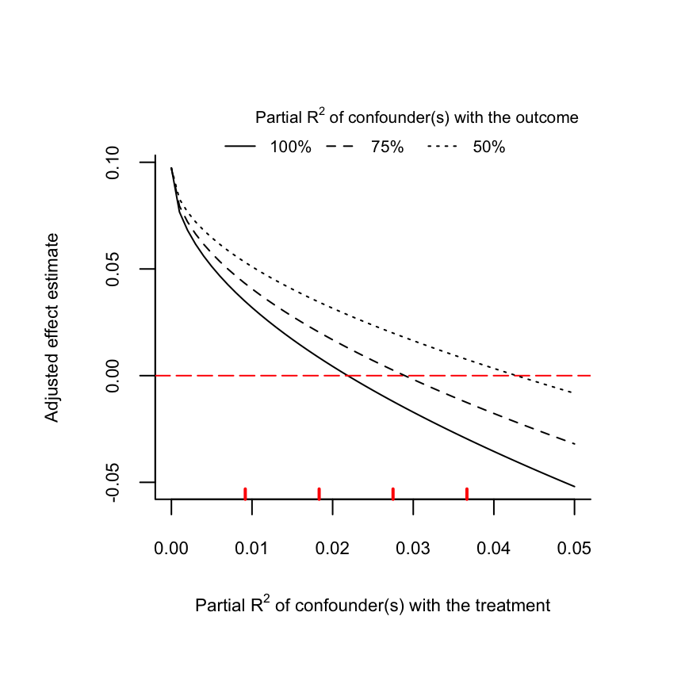
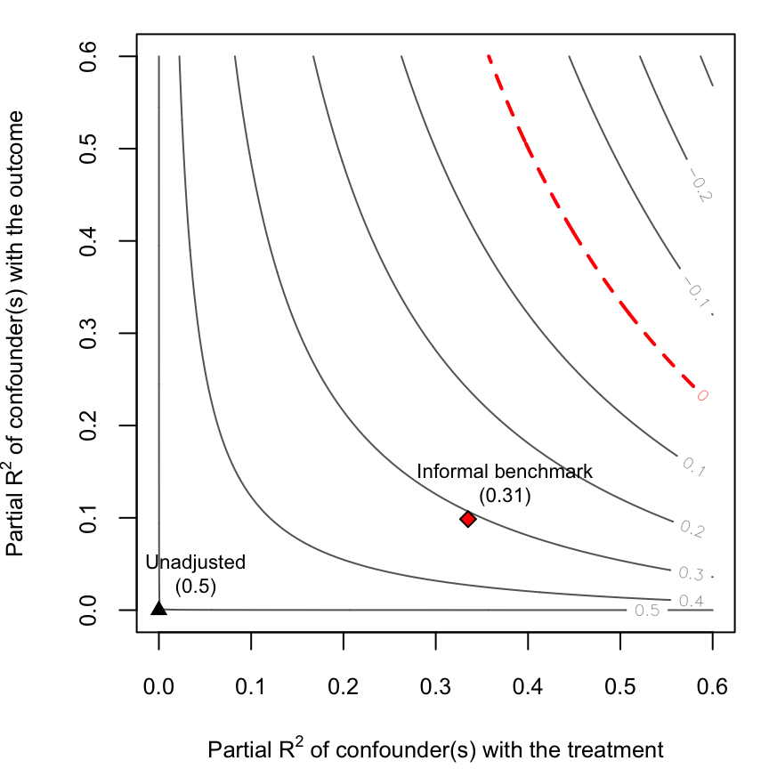
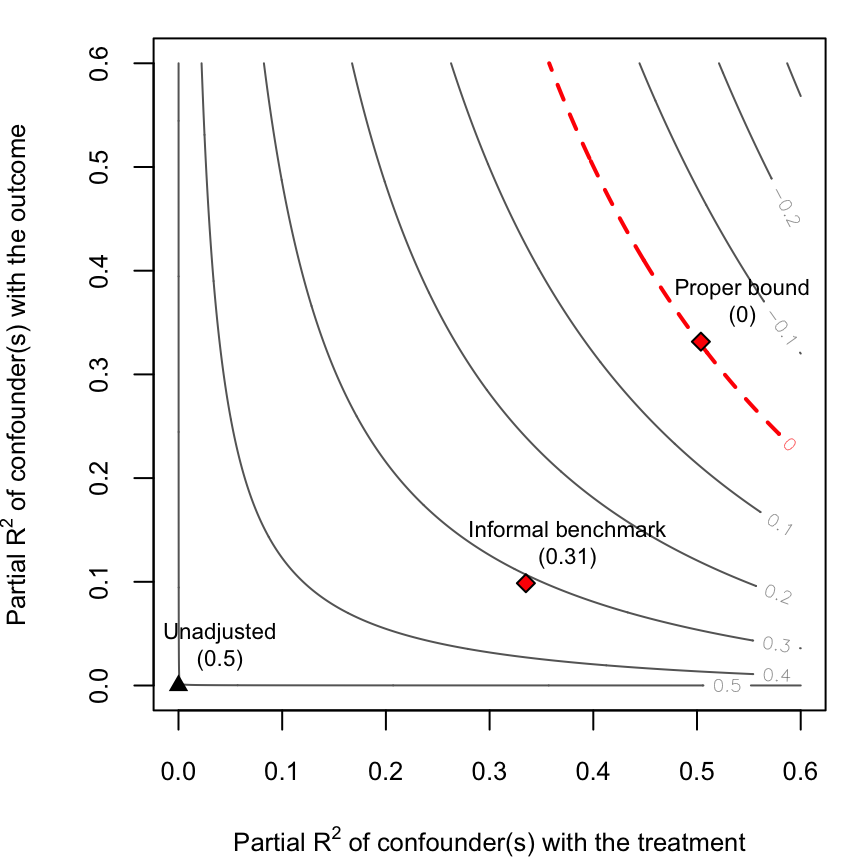

true
Carlos Cinelli
University of California, Los AngelesChad Hazlett
University of California, Los AngelesSource:
vignettes/jss_sensemakr.Rmd
jss_sensemakr.RmdAbstract
This paper introduces the the package for assesing the sensitivity of regression estimates to unobserved confounding. The package provides a suite of tools for sensitivity analysis in regression models developed in Cinelli and Hazlett (2019). These tools are based on the familiar omitted variable bias framework, and can be easily computed using only standard regression results. Furthermore, they do not require assumptions on the functional form of the treatment assignment mechanism nor on the distribution of the unobserved confounders, naturally handle multiple confounders, possibly acting non-linearly, and enable bounding of sensitivity parameters employing domain knowledge.Introduction
Making causal claims about the effect of some variable (the ``treatment’’) on an outcome using observational data poses a perenial problem for researchers across disciplines. In the common setting where researchers “adjust for observables” using tools such as regression, claiming that the resulting estimate is unbiased for a causal quantity rely on untestable assumptions about the absence of unobserved confounders. Weaker claims, e.g. that the causal quantity has a particular sign, similarly require that unobserved confounding does not exceed a certain level. Sensitivity analyses aid in evaluating such claims, by equiping investigators with information about how sensitive a given result is to varying degrees of unobserved confounding, improving upon our ability to understand and transparently communicate results under confounding.
A variety of such approaches have been proposed, dating back to Cornfield et al. (1959), with more recent contributions including (Rosenbaum and Rubin 1983; Robins 1999; Frank 2000; Rosenbaum 2002; Imbens 2003; Brumback et al. 2004; Frank et al. 2008, 2013; Hosman, Hansen, and Holland 2010; Imai et al. 2010; Vanderweele and Arah 2011; Blackwell 2013; Carnegie, Harada, and Hill 2016; Dorie et al. 2016; Middleton et al. 2016; Oster 2017; Cinelli et al. 2019; Franks, D’Amour, and Feller 2019) Yet, such sensitivity analyses remain underutilized. We argue that a number of factors contribute to this reluctant uptake. One is the complicated nature and strong assumptions many of these methods impose, sometimes involving restrictions on or even a complete description of the nature of the confounder. A second reason is that though users routinely report “regression tables” (or perhaps coefficient plots) to convey the results of a regression, until recently we have lacked “standard” quantities that can simply and correctly summarize sensitivity in the face of unobserved confounding. Third, and most fundamentally, connecting the results of a formal sensitivity analysis to a cogent argument about what types of confounders may exist in one’s research project is often difficult, particularly when there are no compelling arguments as to why the treatment assignment should be approximately “ignorable”, “exogeneous”, or “as-if random”. Further, some of the solutions offered by the literature can lead users to erroneous conclusions.
The package implements a suite of tools proposed in Cinelli and Hazlett (2019) for assessing the sensitivity of a regression coefficient to the inclusion of omitted variables. This approach shows how the familiar “omitted variable bias” (OVB) framework can be extended to address these challenges in the linear regression setting. Notably, these tools do not require assumptions on the functional form of the treatment assignment mechanism nor on the distribution of the unobserved confounder, and can be used to assess the sensitivity to multiple confounders, whether they influence the treatment and outcome linearly or not.
–>
Sensitivity analysis in an omitted variable bias framework
In this section, we briefly review the extension of the omitted variable bias (OVB) framework presented in Cinelli and Hazlett (2019). This extension builds on the reparameterization of the OVB formula in terms of partial \(R^2\) values, which allows
Readers that want to see these tools applied in practice, may skip this section.
The starting point of the analysis is a linear regression model of an outcome \(Y\) on a treatment \(D\), controlling for a set of covariates given by \({\bf X}\) and \(Z\), \[\begin{align} Y &= \hat{\tau} D + {\bf X} \hat{{\bf \beta}} + \hat{\gamma}Z + \hat{\epsilon}_{\text{full}} \label{eq:fulleq} \end{align}\] where \(Y\) is an \((n \times 1)\) vector containing the outcome of interest for each of the \(n\) observations and \(D\) is an \((n \times 1)\) treatment variable (which may be continuous or binary); \({\bf X}\) is an \((n \times p)\) matrix of (pre-treatment) covariates including the constant; and \(Z\) is a single \((n \times 1)\) covariate.
However, since \(Z\) is unobserved, the feasible regression the investigator can estimate is the restricted model \[\begin{align} Y &= \hat{\tau}_{\text{res}} D + {\bf X} \hat{{\bf \beta}}_{\text{res}} + \hat{\epsilon}_{\text{res}}\label{eq:restrictedeq} \end{align}\] where \(\hat{\tau}_{\text{res}}\), \(\hat{{\bf \beta}}_{\text{res}}\) are the coefficient estimates of the restricted OLS with only \(D\) and \({\bf X}\), \(Z\), and \(\hat{\epsilon}_{\text{res}}\) its corresponding residual.
How does the observed estimate \(\hat{\tau}_{\text{res}}\) compare to the desired estimate, \(\hat{\tau}\)? Let us define as \(\widehat{\text{bias}}\) the difference between these estimates, \(\widehat{\text{bias}}~:=~\hat{\tau}_{\text{\text{res}}}~-~\hat{\tau}\), where the hat, \(\widehat{(\cdot)}\), clarifies that this quantity is a difference between sample estimates, not the difference between the expectation of a sample estimate and a population value.
Traditional OVB
Using the Frisch-Waugh-Lovell (FWL) theorem () we can ``partial out’’ the observed covariates \({\bf X}\) to give the familiar omitted variable bias (OVB) solution,
\[\begin{align} \hat{\tau}_{\text{\text{res}}} &= \frac{\text{cov}(D^{\perp {\bf X}}, ~Y^{\perp {\bf X}})}{\text{var}(D^{\perp {\bf X}})} \notag\\ &= \frac{\text{cov}(D^{\perp {\bf X}},~\hat{\tau} D^{\perp {\bf X}} + \hat{\gamma}Z^{\perp {\bf X}} )}{\text{var}(D^{\perp {\bf X}})} \notag\\ &= \hat{\tau} + \hat{\gamma}\left(\frac{\text{cov}(D^{\perp {\bf X}},~Z^{\perp {\bf X}})}{\text{var}(D^{\perp {\bf X}})} \right) \notag\\ &= \hat{\tau} + \hat{\gamma}\hat{\delta} \label{eq:biasdef} \end{align}\]
where \(\text{cov}(\cdot)\) and \(\text{var}(\cdot)\) denote the covariance and variance; \(Y^{\perp {\bf X}}\), \(D^{\perp {\bf X}}\) and \(Z^{\perp {\bf X}}\) are the variables \(Y\), \(D\) and \(Z\) after removing the components linearly explained by \({\bf X}\) and we define \(\hat{\delta}~:=~\frac{\text{cov}(D^{\perp {\bf X}}, Z^{\perp {\bf X}})}{\text{var}(D^{\perp {\bf X}})}\). We then have \[\begin{align} \widehat{\text{bias}} = \hat{\gamma}\hat{\delta} \label{eq:deltagamma} \end{align}\]
Reparameterizing the OVB formula
Appealing again to the FWL theorem, we can expand Eq.
\[\begin{align} \widehat{\text{bias}} &= \hat{\delta}\hat{\gamma}\notag\\ &= \left(\frac{\text{cov}(D^{\perp {\bf X}}, ~ Z^{\perp {\bf X}})}{\text{var}(D^{\perp {\bf X}})}\right) \left(\frac{\text{cov}(Y^{\perp {\bf X},D}, ~Z^{\perp {\bf X},D})}{\text{var}(Z^{\perp {\bf X},D})}\right) \notag\\ &= \left(\frac{\text{cor}(D^{\perp {\bf X}}, ~ Z^{\perp {\bf X}})\text{sd}(Z^{\perp {\bf X}})}{\text{sd}(D^{\perp {\bf X}})}\right) \left(\frac{\text{cor}(Y^{\perp {\bf X},D}, ~Z^{\perp {\bf X},D})\text{sd}(Y^{\perp {\bf X}, D})}{\text{sd}(Z^{\perp {\bf X},D})}\right) \notag\\ &= \left(\frac{\text{cor}(Y^{\perp {\bf X}, D}, ~Z^{\perp {\bf X},D}) \text{cor}(D^{\perp {\bf X}}, ~ Z^{\perp {\bf X}})}{\frac{\text{sd}(Z^{\perp {\bf X}, D})}{\text{sd}(Z^{\perp {\bf X}})}} \right) \left(\frac{\text{sd}(Y^{\perp {\bf X},D})}{ \text{sd}(D^{\perp {\bf X}}) } \right) \label{eq:biascor} \end{align}\]
Noting that \(\text{cor}(Y^{\perp {\bf X},D},Z^{\perp {\bf X},D}) ^ 2 = R^2_{Y\sim Z|{\bf X},D}\), that \(\text{cor}(Z^{\perp {\bf X}}, ~D^{\perp {\bf X}})^2 = R^2_{D\sim Z | {\bf X}}\), and that \(\frac{\text{var}(Z^{\perp {\bf X}, D})}{\text{var}(Z^{\perp {\bf X}})} = 1-R^2_{Z \sim D | {\bf X}} = 1-R^2_{D \sim Z | {\bf X}}\), we can rewrite Eq. to rely only partial \(R^2\) measures of association rather than raw regression coefficients,
\[\begin{align} |\widehat{\text{bias}}| &= \sqrt{\frac{ R^2_{Y\sim Z|D, {\bf X}}~ R^2_{D\sim Z | {\bf X}}}{1 - R^2_{D\sim Z | {\bf X}}}} \left(\frac{\text{sd}(Y^{\perp {\bf X}, D})}{ \text{sd}(D^{\perp {\bf X}}) }\right). \label{eq:r2bias} \end{align}\]
Investigators may be interested in how confounders alter inference as well, so we also examine the standard error. Let \(\text{df}\) denote the model degrees of freedom (for the restricted regression actually run). Noting that
\[\begin{align} \text{se}(\hat{\tau}_{\text{res}}) &= \frac{\text{sd}(Y^{\perp {\bf X},D})}{\text{sd}(D^{\perp {\bf X}})} \sqrt{\frac{1}{\text{df}}} \label{eq:seres} \\ \text{se}(\hat{\tau}) &= \frac{\text{sd}(Y^{\perp {\bf X},D, Z})}{\text{sd}(D^{\perp {\bf X}, Z})} \sqrt{\frac{1}{\text{df} - 1}}, \label{eq:sefull} \end{align}\]
whose ratio is \[\begin{align} \frac{\text{se}(\hat{\tau})}{\text{se}(\hat{\tau}_{\text{res}})} &= \left(\frac{\text{sd}(Y^{\perp {\bf X}, D, Z})}{\text{sd}(Y^{\perp {\bf X},D})} \right) \left(\frac{\text{sd}(D^{\perp {\bf X}})}{\text{sd}(D^{\perp {\bf X}, Z})} \right) \sqrt{\frac{\text{df}}{\text{df}-1}}, \end{align}\]
we obtain the expression for the standard error of \(\hat{\tau}\)
\[\begin{align} \text{se}(\hat{\tau}) = \text{se}(\hat{\tau}_{\text{res}}) \sqrt{\frac{1 - R^2_{Y\sim Z|D, {\bf X}}}{1 - R^2_{D\sim Z | {\bf X}}} \left(\frac{\text{df}}{\text{df}-1}\right)}. \label{eq:r2se} \end{align}\]
Moreover, with this we can further see the bias as \[\begin{align} |\widehat{\text{bias}}| &= \text{se}(\hat{\tau}_{\text{res}}) \sqrt{\frac{ R^2_{Y\sim Z|D, {\bf X}}~ R^2_{D\sim Z | {\bf X}}}{1 - R^2_{D\sim Z | {\bf X}}} (\text{df})}. \label{eq:r2bias2} \end{align}\]
Making sense of the partial R2 parameterization
In the partial \(R^2\) parameterization, the relative bias, \(\left| \frac{\widehat{\text{bias}}}{\hat{\tau}_{\text{res}}}\right|\), has a simple form: \[\begin{align} \text{relative bias} = \frac{\overbrace{|R_{Y\sim Z|D, {\bf X}} \times f_{D\sim Z|{\bf X}}|}^\textrm{bias factor}}{\underbrace{|f_{Y\sim D|{\bf X}}|}_\textrm{partial f of D with Y}} = \frac{\text{BF}}{|f_{Y\sim D|{\bf X}}|}. \label{eq:bf} \end{align}\]
where \(f_{D\sim Z|{\bf X}}\) is the partial Cohen’s \(f\).
How the confounder affects the variance has a straightforward interpretation as well. The relative change in the variance, \(\frac{\text{var}(\hat{\tau})}{\text{var}(\hat{\tau}_{\text{res}})}\), can be decomposed into three components,
\[\begin{align} \text{relative change in variance} &= \overbrace{\left(1 - R^2_{Y\sim Z|D, {\bf X}}\right)}^\textrm{VRF} \underbrace{\left(\frac{ 1}{ 1 - R^2_{D\sim Z | {\bf X}}}\right)}_\textrm{VIF} \overbrace{\left(\frac{\text{df}}{\text{df}-1}\right)}^\textrm{change in df} \notag\\ &= \text{VRF} \times \text{VIF} \times \text{change in df}.\label{eq:relvar} \end{align}\]
Bounds on the strength of confounding
Cinelli and Hazlett (2019) employs a bounding approach that uses observed covariates and their strength of association with the treatment and outcome as benchmarks against which to judge hypothetical degrees of confounding, or to argue for bounds on the permissible level of confounding. Assume first that \(Z \perp {\bf X}\) or, equivalently, consider only the part of \(Z\) not linearly explained by \({\bf X}\). Suppose a researcher is willing to assume that some covariate \(X_j\) is particularly important to the treatment or outcome, and in fact that omitted variables cannot explain as much residual variance of \(D\) or \(Y\) as an observed covariate, \(X_j\). More flexibly, one can assert that confounding uniquely explains nor more than \(k_D\) times as much of the treatment as does \(X_j\) of the treatment, and no more than \(k_Y\) as much of the outcome. Formally, this means \[\begin{align} k_D := \frac{R^2_{D\sim Z|{\bf X}_{-j}}}{R^2_{D\sim X_{j}|{\bf X}_{-j}} }, \qquad k_Y := \frac{R^2_{Y \sim Z |{\bf X}_{-j},D}}{R^2_{Y \sim X_{j} |{\bf X}_{-j},D}}. \end{align}\] Where \({\bf X}_{-j}\) represents the vector of covariates \({\bf X}\) excluding \(X_{j}\). That is, \(k_D\) indexes how much variance of the treatment the confounder explains relative to how much \(X_j\) explains (after controlling for the remaining covariates). Ffor example, if the researcher believes the omission of \(X_j\) would result in a larger mean squared error of the treatment assignment regression than the omission of \(Z\), this equals the claim \(k_D \leq 1\). The same reasoning applies to \(k_Y\).
Given parameters \(k_D\) and \(k_Y\), we can rewrite the strength of the confounders as, \[\begin{align} R^2_{D\sim Z|{\bf X}} = k_D f^2_{D\sim X_{j}|{\bf X}{-j}}, \qquad R^2_{Y\sim Z|D, {\bf X}} \leq \eta^2 f^2_{Y \sim X_j|{\bf X}_{-j},D} \label{eq:bounds} \end{align}\]
where \(\eta\) is a scalar which depends on \(k_Y\), \(k_D\) and \(R^2_{D\sim X_{j}|{\bf X}{-j}}\),
These equations allow us to investigate the maximum bias possible due to confounding at most ``k times’’ as strong as a particular covariate \(X_j\).
Sensitivity statistics for routine reporting
As the formulas above determine the bias (or adjusted values) of the estimate and the standard error for any given degree of confounding, they can be used in numerous ways to explore the sensitivity of a result. Contour plots, which we demonstrate below, allow us to visualize the entire range of results that would be obtained as we vary both sensitivity parameters. However, Cinelli and Hazlett (2019) propose several summary statistics that can more easily and readily convey the sensitivity of a results in the face of unobserved confounding and can be added to regression tables without having to convey an entire contour plot.
The partial R2 of the treatment with the outcome
Consider the following question: ``if an extreme confounder explained all the residual variance of the outcome, how strongly associated with the treatment would it need to be in order to eliminate the estimated effect?’’ As it happens, the answer is precisely the \(R^2_{Y\sim D|{\bf X}}\).
Specifically, a confounder explaining residual variance of the outcome implies \(R_{Y\sim Z|D, {\bf X}}~=~1\). By Equation , to bring the estimated effect down to zero (relative~bias = 1), this means \(|f_{D\sim Z|{\bf X}}|\) needs to equal \(|f_{Y\sim D|{\bf X}}|\), which implies \(R^2_{D\sim Z|{\bf X}}~=~R^2_{Y\sim D|{\bf X}}\). Thus, \(R^2_{Y\sim D|{\bf X}}\) is not only the determinant of the robustness of the treatment effect coefficient, but can also be interpreted as the result of an ``extreme scenario’’ sensitivity analysis.
The Robustness Value
Let \(|t^*_{\alpha, \text{df}-1}|\) denote the t-value threshold for a t-test with significance level of \(\alpha\) and \(\text{df}-1\) degrees of freedom, and define \(f^*_{\alpha, \text{df} - 1} := |t^*_{\alpha, \text{df}-1}|/\sqrt{\text{df} -1}\). Now construct an adjusted \(f_{q, \alpha}\), accounting for both the proportion of reduction \(q\) of the point estimate and the boundary below which statistical significance is lost at the level of \(\alpha\). First, define \(f_q = q|f_{Y\sim D | {\bf X}}|\). Then construct \[\begin{align} f_{q, \alpha} := f_q - f^*_{\alpha,\text{df} - 1} \end{align}\] If \(f_{q, \alpha} < 0\), then the robustness value is zero. If \(f_{q, \alpha} > 0\), then a confounder with a partial \(R^2\) of, \[\begin{align} RV_{q, \alpha} = \frac{1}{2}\left(\sqrt{f_{q, \alpha}^4 + 4f_{q, \alpha}^2} - f_{q, \alpha}^2\right), \label{eq:rvt_main} \end{align}\]
both with the treatment and with the outcome is sufficiently strong to make the adjusted t-test not reject the null hypothesis \(H_0: \tau = (1-q)|\hat{\tau}_{\text{res}}|\) at the \(\alpha\) level (or, equivalently, to make the adjusted \(1-\alpha\) confidence interval include \((1-q)|\hat{\tau}_{\text{res}}|\)). When \(RV_{q, \alpha} > 1 - 1/f^2_{q}\) then, as with the \(RV_q\), we can conclude that no confounder with both associations lower than \(RV_{q, \alpha}\) is able to overturn the conclusion of such a test. In the rare cases when , then setting
\[
RV_{q, \alpha} = (f_{q}^2 - f^{*2}_{\alpha,\text{df} - 1})/(1+f^2_{q})
\]
restores the property that no confounder weaker on both associations would change the conclusion.
An illustration of the basic functionality: violence in Darfur
Given that sensitivity analysis requires contextual knowledge to be properly interpreted, we illustrate the basic functionality of the package with a real example. Here we reproduce the results found in Section 5 of Cinelli and Hazlett (2020), which estimates the effects of exposure to violence on attitudes towards peace, in Darfur. Further details about this application and the data can be found in Hazlett (2019) and Cinelli and Hazlett (2020).
The data and research question
During 2003 and 2004, the Darfurian government promoted a horrific violence campaign against civilians, killing an estimated two hundred thousand people. In this application, we are interested in learning how being directly harmed changed individual attitudes towards peace. On average, did direct exposure to this violence make individuals more likely to ask for revenge, or, due to wearieness, ask for peace?
The sensemakr package comes with an example dataset drawn from a survey on attitudes of Darfurian refugees in eastern Chad, regarding this unfortunate episode (Hazlett, 2019). The data can be loaded with the command data("darfur").
The “treatment” variable of interest is directlyharmed, which indicates whether the individual was physically injured during attacks on villages in Darfur, between 2003 and 2004. The main outcome of interest is peacefactor, an index measure of pro-peace attitudes. Other covariates in the data include: village (a factor variable indicating the original village of the respondent), female (a binary indicator of gender), age, herder_dar (whether they were a herder in Darfur), farmer_dar (whether they were a farmer in Darfur), and past_voted (whether they report having voted in an earlier election, prior to the conflict). For further details, see ?darfur.
Violence against civilians included aerial bombardments by the government as well as assaults by the Janjaweed, a pro-government militia. While some villages were selected for more exposure to violence, within village violence was largely indiscriminate. The bombing could not be finely targetted, and the Janjaweed had little information about civilians which to attack, with one major exception: women were targeted for sexual assault.
Given these considerations, a researcher may argue that adjusting for village and female is sufficient for control of confounding, and run the following linear regression model (in which other pre-treatment covariates, although not necessary for identification, are also included):
# runs regression model
darfur.model <- lm(peacefactor ~ directlyharmed + village + female +
age + farmer_dar + herder_dar +
pastvoted + hhsize_darfur,
data = darfur)This regression model results in the following estimates:
% Table created by stargazer v.5.2.2 by Marek Hlavac, Harvard University. E-mail: hlavac at fas.harvard.edu % Date and time: Mon, Feb 17, 2020 - 15:24:15That is, we find that, those exposed to violence were on average, more pro-peace.
The threat of unobserved confounders
The previous estimate hinges on the assumption of no unobserved confounders. Not all investigators, however, may agree with this story.
For example, one may argue that, athough the bombing was crude, bombs were still more likely to hit the center of the village, and those in the center have already different attitudes towards peace. One may also argue that the Janjaweed could have some idea of the wealth of individuals and target those, or that individuals with certain previous political attitudes might have exposed themselves to danger more often. To complicate things, all these factors could be operating non-linearly, such as for instance, with interactions.
This suggest that, instead of the previous linear model ( darfur.model ), we should have run the model below,
darfur.complete.model <- lm(peacefactor ~ directlyharmed + village +
female + age + farmer_dar + herder_dar +
pastvoted + hhsize_darfur +
center*wealth*political_attitudes,
data = darfur)Where here center*wealth*political_attitudes is the R formula for including fully interacted terms for these three variables. But trying to fit the model darfur.complete.model will result in error: none of the variables center, wealth or political_attitudes were measured. Thus, this begs the question: how strong would these unobserved confounders (or every reamaining unobserved confounders) need to be to change our previous conclusions? Or, more precisely, how do the inferences regarding the coefficient of directlyharmed differ between the model we can actually fit darfur.model and the model we wished we could have fit darfur.complete.model?
Additionally, we have domain knowledge regarding the main determinants of exposure to violence, such as the special role of gender in targetting. This knowledge may be used to limit the strength of unobserved confounding. For instance, even if variables such as wealth remained as confounders, one could argue that it is unreasonable to expect that they explain more of the variation of exposure to violence than gender. How can we leverage claims regarding the relative importance of the variable female to bound the plausible strength of unobserved variables? We show next how to answer those questions using sensemakr.
Sensitivity Analysis
The main function of the package is sensemakr(). This function performs the most common sensitivity analyses, which can be then be explored with the print, summary and plot methods (see details in ?print.sensemakr and ?plot.sensemakr). We begin the analysis by applying sensemakr to the original regression model, darfur.model:
# runs sensemakr for sensitivity analysis
# in the darfur example
darfur.sensitivity <- sensemakr(model = darfur.model,
treatment = "directlyharmed",
benchmark_covariates = "female",
kd = 1:3,
ky = 1:3,
q = 1,
alpha = 0.05,
reduce = TRUE)The arguments here are:
model: the
lmobject with the outcome regression. In our case,darfur.model.treatment: the name of the treatment variable. In our case,
"directlyharmed".benchmark_covariates: the names of covariates that will be used to bound the plausible strength of the unobserved confounders. Here, we put
"female", given that we know it was one the main determinants of exposure to violence, and it is also a strong determinant of attitudes towards peace.kd and ky: these arguments parameterize how many times stronger the confounder is related to the treatment (
kd) and to the outcome (ky) in comparison to the observed benchmark covariate (female). In our example, this means we want to investigate the maximum strength of a confounder once, twice, or three times as strong as female (in explaining treatment and outcome variation). Default forkyis to be the same askd.q: what percent change the original effect estimate would be deemed problematic? Here 1 means a reduction of 100% of the current effect estimate, that is, a true effect of zero would be deemed problematic. Default is 1.
alpha: significance level of interest for making statistical inferences. Default is 0.05.
reduce: should we consider confounders acting towards increasing or reducing the absolute value of the estimate? The default is
reduce = TRUE, which means we are considering confounders pull the estimate towards (or through) zero.
Using the default arguments, one can simplify the previous call to:
darfur.sensitivity <- sensemakr(model = darfur.model,
treatment = "directlyharmed",
benchmark_covariates = "female",
kd = 1:3)We can now explore the sensitivity analysis results.
Minimal sensitivity reporting
The print method of sensemakr provides a quick review of the original (unadjusted) estimate along with three summary sensitivity statistics suited for routine reporting: the partial R2 of the treatment with the outcome, the robustnuess value (RV) required to reduce the estimate entirely to zero (i.e. \(q=1\)), and the RV beyond which the estimate would no longer be statistically distinguishable from zero at the 0.05 level (\(q=1\), \(\alpha=0.05\)).
## Sensitivity Analysis to Unobserved Confounding
##
## Model Formula: peacefactor ~ directlyharmed + village + female + age + farmer_dar +
## herder_dar + pastvoted + hhsize_darfur
##
## Unadjusted Estimates of ' directlyharmed ':
## Coef. estimate: 0.09732
## Standard Error: 0.02326
## t-value: 4.18445
##
## Sensitivity Statistics:
## Partial R2 of treatment with outcome: 0.02187
## Robustness Value, q = 1 : 0.13878
## Robustness Value, q = 1 alpha = 0.05 : 0.07626
##
## For more information, check summary.The package also provides a function that creates a latex or html table with these results, as shown below (for the html table, simply change the argument to format = "html").
These three sensitivity statistics provide a minimal reporting for sensitivity analysis. More precisely:
The robustness value for bringing the point estimate of
directlyharmedexactly to zero (\(RV_{q=1}\)) is 13.9% . This means that unobserved confounders that explain 13.9% of the residual variance both of the treatment and of the outcome are sufficient to explain away all the observed effect. On the other hand, unobserved confounders that do not explain 13.9% of the residual variance both of the treatment and of the outcome are not sufficiently strong to do so.The robustness value for testing the null hypothesis that the coefficient of
directlyharmedis zero \((RV_{q =1, \alpha = 0.05})\) falls to 7.6%. This means that unobserved confounders that explain 7.6% of the residual variance both of the treatment and of the outcome are sufficient to bring the lower bound of the confidence interval to zero (at the chosen significance level of 5%). On the other hand, unobserved confounders that do not explain 7.6% of the residual variance both of the treatment and of the outcome are not sufficiently strong to do so.Finally, the partial \(R^2\) of
directlyharmedwithpeacefactormeans that, in an extreme scenario, in which we assume that unobserved confounders explain all of the left out variance of the outcome, these unobserved confounders would need to explain at least 2.2% of the residual variance of the treatment to fully explain away the observed effect.
These are useful quantities that summarize what you need to know in order to safely rule out confounders that are deemed to be problematic. Interpreting these values requires domain knowledge about the data generating process. Therefore, we encourage researchers to argue about what are plausible bounds on the maximum explanatory power that unobserved confounders could have in a given application.
Sometimes researchers may have a hard time making judgments regarding the absolute strength of a confounder, but may have grounds to make relative claims, for instance, by arguing that unobserved confounders are likely not multiple times stronger than a certain observed covariate. In our application, this is indeed the case. One could argue that, given the nature of the attacks, it is hard to imagine that unobserved confounding could explain much more of targetting than what was explained by the observed variable female. The lower corner of the table, thus, provides bounds on confounding as strong as female, \(R^2_{Y\sim Z| {\bf X}, D}\) = 12.5%, and \(R^2_{D\sim Z| {\bf X} }\) = 0.9%. Since both of those are below the RV, the table reveals that confounders as strong as female are not sufficient to explain away the observed estimate. Moreover, since the bound on \(R^2_{D\sim Z| {\bf X} }\) is below the partial \(R^2\) of the treatment with the outcome, \(R^2_{Y \sim D |{\bf X}}\), the table also reveals an extreme confounder explaining all residual variation of the outcome, and as strongly associated with the treatment as female also cannot do so.
All these results are exact for a single unobserved confounder, and conservative for multiple confounders, possibly acting non-linearly. Finally, the summary method for sensemakr provides an extensive report with verbal descriptions of the results, similar to the explanation we have given above. For further details, please refer to Cinelli and Hazlett (2020).
Sensitivity contour plots of point estimates and t-values
The previous sensitivity table provides a good summary of how robust the current estimate is to unobserved confounding. However, researchers may be willing to refine their analysis by visually exploring the whole range of possible estimates that confounders with different strengths could cause, while placing different bounds on the plausible strength of confounding based on different assumptions on how they compare to observed covariates. For these, one can use the plot method for sensemakr.
As contour plots for the point estimate are the default, we start by examining those.

The horizontal axis shows the hypothetical residual share of variation of the treatment that unobserved confouding explains, \(R^2_{D\sim Z| {\bf X} }\). The vertical axis shows the hypothetical partial \(R^2\) of unobserved confouding with the outcome, \(R^2_{Y\sim Z| {\bf X}, D}\). The contours show what would be the estimate for directlyharmed that one would have obtained in the full regression model including unobserved confounders with such hypothetical strengths. Note the plot is parameterized in way that hurts our preferred hypothesis, by pulling the estimate towards zero—the direction of the bias was set in the argument reduce = TRUE of sensemakr().
The bounds on the strength of confouding, determined by the parameter kd = 1:3 in the call for sensemakr(), are also shown in the plot. Note that the plot reveals that the direction of the effect (positive) is robust to confounding once, twice or even three times as strong as the observed covariate female, although in this last case the magnitude of the effect is reduced to a third of the original estimate.
We now examine the sensitivity of the t-value for testing the null hypothesis of zero effect. For this, it suffices to change the option sensitivity.of = "t-value".

The plot revelas that, at the 5% significance level, the null hypothesis of zero effect would still be rejected given confounders once or twice as strong as female. However, differently from the exact point-estimate, accounting for sampling uncertainty now means that the null hypothesis of zero effect would not be rejected with the inclusion of a confounder three times as strong as female.
Sensitivity plots of extreme scenarios
Sometimes researches may be better equipped to make plausibility judgments about the strength of determinants of the treatment assignment mechanism, and have less knowledge about the determinantes of the outcome. In those cases, extreme scenarios sensitivity plots may be an option. For this plot, user should choose the option type = extreme. Here one assumes confounding explains all or a large fraction of the residual variance of the outcome, and examine how the point estimate is affected under different hypothetical strenghts of the association of the confounder with the treatment.

The default option for the extreme scenarios is r2yz.dx = c(1, .75, .5), which sets the association of confounders with outcome to \(R^2_{Y\sim Z| {\bf X}, D}\)=100%, \(R^2_{Y\sim Z| {\bf X}, D}\)=75% and \(R^2_{Y\sim Z| {\bf X}, D}\)=50%. The bounds on the strength of association of a confounder once, twice or three times as strongly associated with the treatment as female are shown as red ticks in the horizonal axis. As the plot shows, even in the most extreme case of \(R^2_{Y\sim Z| {\bf X}, D}\)=100%, confounders would need to be more than twice as strongly associated with the treatment to fully explain away the point estimate. Moving to the scenarios \(R^2_{Y\sim Z| {\bf X}, D}\)=75% and \(R^2_{Y\sim Z| {\bf X}, D}\)=50%, confounders would need to be more than three times as strongly associated with the treatment to fully explain away the point estimate.
A disciplined discussion about confounding
Having gone through the basic functionality of the package, here we recall some caveats on intepretation that applies to any sensitivity analyses.
The results computed by sensemakr() tell us what we need to be prepared to believe, in order to maintain the claim originally made: that exposure to violence, on average, had a large positive effect in attitudes towards peace, in Darfur 2003-2004. In particular, the results of the sensitivity analysis performed here show that, to explain all the observed estimated effect, even in a worst case scenario where the unobserved confounder explains all residual variation of the outcome, this unobserved confounder would need to be at least more than twice as strongly associated with the treatment as the covariate female. This is a true quantitative statement that describes the strength of confounding needed to overturn the research conclusions.
The analysis, however, says nothing about whether such a confounder does or does not exist. What it does is to discipline the discussion regarding the causal interpretation of the effect estimate:
A causal interpretation of the estimate may be defended by articulating that a confounder with such strength is unlikely. For instance, one could argue that, given the way injuries (the “treatment”) occurred, the scope for targeting particular types of individuals was quite limited; aircraft dropped makeshift and unguided bombs and other objects over villages, and militia raided without concern for who they are targeting—the only known major exception to this was targeting gender, which is one of the most visually apparent characteristics of an individual, and was one of the main factors of targetting due to sexual assaults.
Likewise, similar grounds are required to persuasively dismiss a causal interpretation of the estimate. There are standards of (relative) strength that hypothesized unobserved confounders need to meet in order to be problematic. For instance, a skeptic has to articulate (using domain knowledge) why a confounder that explains at least more than twice of the variation of the treatment assignment than the covariate Female is plausible. Otherwise, that confounder cannot logically account for all the observed association, even in an extreme scenario.
That is, robustness to confouding is claimed to the extent one agrees with the arguments in 1 (which rely on domain knowledge about attacks in Darfur); and it can be deemed fragile insofar as alternative stories meeting the requirements in 2 can be made. Therefore, sensitivity analysis are not here to obviate discussions about confouding by following automatic procedures, but to estimulate a more displined, quantitative argument about confounding.
Customized sensitivity analyses
The basic functionality demonstrated int he previous section will likely suffice for most users, most of the time. Sometimes, however, more flexibility will be needed in a given project. When this happens, researchers may resort directly to other sensitivity functions of the package to customize their sensitivity analysis. Those functions can be found in the reference documentation, and we also provide some examples of those types of analyses next.
Users will most commonly call upon the main functions and related methods, i.e. and the plot(), print(), and summary() methods for it. The package also gives users access to lower-level functions in order to compute key sensitivity statistics directly. The package is organized:
Users that want to perform more specific sensitivity analysis can use individual functions. These functions can divided in the following categories, according to their functionalities:
functions for computing the bias, adjusted estimates and standard errors: these comprise the functions
bias(),relative_bias(),bias_factor(),adjusted_estimate(),adjusted_se(),adjusted_t()andadjusted_partial_r2(). These functions take as input the original (unadjested) quantity and a pair of sensitivity parameters (the partial \(R^2\) of the omitted variable with the treatment and the outcome), and return the new adjusted quantity reflecting the omitted variable bias.functions for computing sensitivity statistics: these comprise the functions
robustness_value(),partial_r2(),partial_f(),partial_f2()andsensitivity_stats(). These functions compute the sensitivity statistics proposed in Cinelli and Hazlett (2019), such as the robustness value and the partial \(R^2\) of the treatment with the outcome, which reveal how robust the regression estimate is to unobserved confounding.bounding functions: the function
ovb_bound()computes bounds on the strength of confoundingplotting functions:
Revisiting Darfur
Show here how to reproduce with lower level functions:
Sensitivity statistics
There are individual functions for each of the sensitivity statistics, , , and the . The robustness value and partial \(R^2\) have been described above as key sensitivity statistics useful in standard reporting and with direct interpretations. The partial \(f\) does not have as direct an interpretation but appears frequently in the mathematics described above as a sufficient statistic from which sensitivity analyses can be constructed.
These functions have both and numeric methods so that users may pass in an object or call them using numerical values based from elsewhere.
## directlyharmed
## 0.1387764
## Parameters: q = 1## directlyharmed
## 0.02187309## directlyharmed
## 0.14954## [1] 0.1387764
## Parameters: q = 1## [1] 0.02187309## [1] 0.14954We also provide the convenience function to compute all three sensitivity statistics for a regression coefficient of interest. The function returns a .
## treatment estimate se t_statistic r2yd.x rv_q
## 1 directlyharmed 0.09731582 0.02325654 4.18445 0.02187309 0.1387764
## rv_qa f2yd.x dof
## 1 0.07625797 0.02236222 783Bias and adjusted quantities
Several functions are useful to determine biases or adjusted estimates given those biases for postulated degrees of confounding: , , , , . Suppose we postulate confounding able to explain 5% of residual variation in treatment and in the outcome. We can compute various biases and adjustments directly,
## directlyharmed
## 0.03338368## directlyharmed
## 0.3430447## directlyharmed
## 0.06393214## [1] 0.06393214### Adjustment to SE
adjusted_se(darfur.model, treatment = "directlyharmed", r2dz.x = 0.05, r2yz.dx = 0.05)## directlyharmed
## 0.0232714### Adjusted t-value
adjusted_t(darfur.model, treatment = "directlyharmed", r2dz.x = 0.05, r2yz.dx = 0.05)## directlyharmed
## 2.747241Plotting functions
Current default options for plots works best with plots width and height around 4 to 5 inches.
. These can be called directly and bounds/benchmarks can be added to them through additional calls. For example,
# contour plot
ovb_contour_plot(model = darfur.model,
treatment = "directlyharmed",
benchmark_covariates = "female",
kd = 2, nlevels = 5, lim = 0.3)
add_bound_to_contour(r2dz.x = 0.1,
r2yz.dx = 0.1,
bound_value = adjusted_estimate(model = darfur.model,
treatment = "directlyharmed",
r2dz.x = .1, r2yz.dx = .1),
bound_label = "Manual Bound")
# add bound 3/1 times stronger than female
add_bound_to_contour(model = darfur.model,
treatment = "directlyharmed",
benchmark_covariates = "female",
kd = 3, ky = 1)
# add bound 50/2 times stronger than age
add_bound_to_contour(model = darfur.model,
treatment = "directlyharmed",
benchmark_covariates = "age",
kd = 50, ky = 2)
ovb_extreme_plot(model = darfur.model,
treatment = "directlyharmed",
benchmark_covariates = "female",
kd = 1:4,
lim = 0.05)
The risks of Informal Benchmarking
In this section, we show how to replicate the example in Section 6.1 of Cinelli and Hazlett (2020) using the R package sensemakr. This example is especially useful to illustrate how users can construct their own sensitivity contour plots with customized bounds, and it also shows the risks of informal benchmarking procedures that are still widespread in the sensitivity analysis literature (e.g., Imbens, 2003; Blackwell, 2013; Hosman et al. 2010, Dorie et al., 2016, Hong et al. 2018).
Background
Section 4.4 of Cinelli and Hazlett (2020) shows how it is possible to bound the maximum strength of confounding given relative judgments on how the strength unobserved variables compares to the strength of observed variables. You can compute those bounds with the sensemakr package using the function ovb_bounds()
Prior work in sensitivity analysis—dating back at least to Imbens (2003), and followed by others (e.g, Hosman et al. 2010, Dorie et al., 2016, Hong et al. 2018)—has also proposed comparing observables with unobservables, but has done so by informally using statistics of observed variables to “calibrate intuitions” about sensitivity parameters concerning the unobserved variable. This practice, however, can have undesirable consequences as we show next.
Simulating the data
Let us begin by simulating the data generating process used in our example. Consider a treatment variable \(D\), an outcome variable \(Y\), one observed confounder \(X\), and one unobserved confounder \(Z\). Again, all disturbance variables \(U\) are mutually independent and note that, in reality, the treatment \(D\) has no causal effect on the outcome \(Y\).
\[\begin{align} Z &= U_{z}\\ X &= U_{x}\\ D &= X + Z + U_d\\ Y &= X + Z + U_y \end{align}\]
Also note that, in this model: (i) the unobserved confounder \(Z\) is independent of \(X\); and, (ii) the unobserved confounder \(Z\) is exactly like \(X\) in terms of its strength of association with the treatment and the outcome. The code below creates a sample of size 10,000 of this data generating process.
Fitting the model
In this example, the investigator does not observe the confounder \(Z\). Therefore, she is forced to fit the restricted linear model \(Y \sim D + X\), resulting in the following estimated values
##
## Call:
## lm(formula = Y ~ D + X)
##
## Residuals:
## Min 1Q Median 3Q Max
## -5.2889 -0.8314 0.0017 0.8287 5.2918
##
## Coefficients:
## Estimate Std. Error t value Pr(>|t|)
## (Intercept) -0.006058 0.003883 -1.56 0.119
## D 0.501434 0.002745 182.69 <2e-16 ***
## X 0.497381 0.004755 104.60 <2e-16 ***
## ---
## Signif. codes: 0 '***' 0.001 '**' 0.01 '*' 0.05 '.' 0.1 ' ' 1
##
## Residual standard error: 1.228 on 99997 degrees of freedom
## Multiple R-squared: 0.4998, Adjusted R-squared: 0.4998
## F-statistic: 4.995e+04 on 2 and 99997 DF, p-value: < 2.2e-16Note we obtain a large and statistically significant coefficient estimate of the effect of \(X\) on \(Y\) (\(0.5\)). However, we know that the variable \(Z\) is not observed, and there is the fear that this estimated effect is in fact due to the bias caused by \(Z\). On the other hand, let us suppose the investigator correctly know that: (i) \(Z\) and \(X\) have the same strength of association with \(D\) and \(Y\); and, (ii) \(Z\) is independent of \(X\). Can we leverage this information to undersand how much bias a confounder \(Z\) “not unlike” \(X\) could cause?
Informal benchmarks
Computing the bias due to the omission of \(Z\) requires two sensitivity parameters: its partial \(R^2\) with the treatment \(D\) and its partial \(R^2\) with the outcome \(Y\). How could we go about computing the bias that a confounder \(Z\) “not unlike \(X\)” would cause?
Intuitively, it seems that we could take as reference the observed partial \(R^2\) of \(X\) with \(D\) and \(Y\), and use those as the plausible values for the sensitivity parameters. That’s the essence of many informal benchmarking proposals. So llet us now compute those observed partial \(R^2\) using the partial_r2() function of sensemakr. For the partial \(R^2\) of \(X\) with the treatment, we also need to fit a treatment regression \(D \sim X\) first.
# loads sensemakr package
library(sensemakr)
# fits treatment regression
model.dx <- lm(D ~ X)
# computes observed partial R2 of X
r2yx.d <- partial_r2(model.ydx, covariates = "X")
r2dx <- partial_r2(model.dx, covariates = "X")Once both partial \(R^2\) are computed, we can determine the implied adjusted estimate due to an unobserved confounder \(Z\) using the adjusted_estimate() function.
informal_adjusted_estimate <- adjusted_estimate(model.ydx,
treatment = "D",
r2dz.x = r2dx,
r2yz.dx = r2yx.d)We can now plot the sensitivity contours with ovb_contour_plot() and add our informal benchmark with the numeric method of add_bound_to_contour(). The arguments label.bump.x and label.bump.y of these functions allow adjusting the position of the bound label in the plot.
# draws sensitivity contours
ovb_contour_plot(model.ydx,
treatment = "D",
lim = .6)
# adds informal benchmark
add_bound_to_contour(r2dz.x = r2dx,
r2yz.dx = r2yx.d,
bound_value = informal_adjusted_estimate,
bound_label = "Informal benchmark")
As we can see, the results of the informal benchmark are different from what we expected. The informal benchmark point is still far away from zero, and this would lead an investigator to incorrectly conclude that an unobserved confounder \(Z\) “not unlike \(X\)” is not sufficient to explain away the observed effect. Moreover, this incorrect conclusion occurs despite correctly assuming that: (i) \(Z\) and \(X\) have the same strength of association with \(D\) and \(Y\); and, (ii) \(Z\) is independent of \(X\). Why does this happen?
As explained in Section 6.1 of Cinelli and Hazlett (2020), there are two problems affecting informal benchmarks in this setting. First, we have to make an adjustment of baseline variance to be explained, since the sensitivity parameters consider the partial \(R^2\) of \(Z\) with the outcome, after taking into account what is already explained by \(X\). Second, consider the DAG of our structural model:

That is, although \(Z\) is marginally independent of \(X\), note that \(Z\) is not conditionally independent of \(X\), given \(D\), because \(D\) is a collider (Pearl, 2009). This distorts the observed quantities of \(X\) that are being used for benchmarking.
Formal bounds
Given the above considerations, we do not recomment using informal benchmarks for sensitivity analysis. We now show how to compute formal bounds. In sensemakr, you can use the function ovb_bounds().
# compute formal bounds
formal_bound <- ovb_bounds(model = model.ydx,
treatment = "D",
benchmark_covariates = "X",
kd = 1, ky = 1)In this function you specify the linear model being used (model.ydx), the treatment of interst (\(D\)), the observed variable used for benchmarking (\(X\)), and how stronger \(Z\) is in explaining treatment (kd) and outcome (ky) variation, as compared to the benchmark variable \(X\). We can now plot the proper bound against the informal benchmark.
# contour plot
ovb_contour_plot(model.ydx,
treatment = "D",
lim = .6)
add_bound_to_contour(r2dz.x = r2dx,
r2yz.dx = r2yx.d,
bound_value = informal_adjusted_estimate,
bound_label = "Informal benchmark")
add_bound_to_contour(bounds = formal_bound,
bound_label = "Proper bound")
Note that, using the formal bounds, the researcher now reaches the correct conclusion that, an unobserved confounder \(Z\) similar to \(X\) is strong enough to explain away all the observed association. For further details, please see Sections 4.4 and 6.1 of Cinelli and Hazlett (2020).
References
Blackwell, Matthew. 2013. “A Selection Bias Approach to Sensitivity Analysis for Causal Effects.” Political Analysis 22 (2). Oxford University Press: 169–82.
Brumback, Babette A, Miguel A Hernán, Sebastien JPA Haneuse, and James M Robins. 2004. “Sensitivity Analyses for Unmeasured Confounding Assuming a Marginal Structural Model for Repeated Measures.” Statistics in Medicine 23 (5). Wiley Online Library: 749–67.
Carnegie, Nicole Bohme, Masataka Harada, and Jennifer L Hill. 2016. “Assessing Sensitivity to Unmeasured Confounding Using a Simulated Potential Confounder.” Journal of Research on Educational Effectiveness 9 (3). Taylor & Francis: 395–420.
Cinelli, Carlos, and Chad Hazlett. 2019. “Making Sense of Sensitivity: Extending Omitted Variable Bias.” Journal of the Royal Statistical Society: Series B (Statistical Methodology). https://doi.org/10.1111/rssb.12348.
Cinelli, Carlos, Daniel Kumor, Bryant Chen, Judea Pearl, and Elias Bareinboim. 2019. “Sensitivity Analysis of Linear Structural Causal Models.” International Conference on Machine Learning.
Cornfield, Jerome, William Haenszel, E Cuyler Hammond, Abraham M Lilienfeld, Michael B Shimkin, and Ernst L Wynder. 1959. “Smoking and Lung Cancer: Recent Evidence and a Discussion of Some Questions.” Journal of National Cancer Institute, no. 23. Oxford University Press: 173–203.
Dorie, Vincent, Masataka Harada, Nicole Bohme Carnegie, and Jennifer Hill. 2016. “A Flexible, Interpretable Framework for Assessing Sensitivity to Unmeasured Confounding.” Statistics in Medicine 35 (20). Wiley Online Library: 3453–70.
Frank, Kenneth A. 2000. “Impact of a Confounding Variable on a Regression Coefficient.” Sociological Methods & Research 29 (2). Sage Publications, Inc.: 147–94.
Frank, Kenneth A, Spiro J Maroulis, Minh Q Duong, and Benjamin M Kelcey. 2013. “What Would It Take to Change an Inference? Using Rubin’s Causal Model to Interpret the Robustness of Causal Inferences.” Educational Evaluation and Policy Analysis 35 (4). SAGE Publications Sage CA: Los Angeles, CA: 437–60.
Frank, Kenneth A, Gary Sykes, Dorothea Anagnostopoulos, Marisa Cannata, Linda Chard, Ann Krause, and Raven McCrory. 2008. “Does Nbpts Certification Affect the Number of Colleagues a Teacher Helps with Instructional Matters?” Educational Evaluation and Policy Analysis 30 (1). Sage Publications Sage CA: Thousand Oaks, CA: 3–30.
Franks, Alex, Alex D’Amour, and Avi Feller. 2019. “Flexible Sensitivity Analysis for Observational Studies Without Observable Implications.” Journal of the American Statistical Association, nos. just-accepted. Taylor & Francis: 1–38.
Hosman, Carrie A, Ben B Hansen, and Paul W Holland. 2010. “The Sensitivity of Linear Regression Coefficients’ Confidence Limits to the Omission of a Confounder.” The Annals of Applied Statistics. JSTOR, 849–70.
Imai, Kosuke, Luke Keele, Teppei Yamamoto, and others. 2010. “Identification, Inference and Sensitivity Analysis for Causal Mediation Effects.” Statistical Science 25 (1). Institute of Mathematical Statistics: 51–71.
Imbens, Guido W. 2003. “Sensitivity to Exogeneity Assumptions in Program Evaluation.” The American Economic Review 93 (2). JSTOR: 126–32.
Middleton, Joel A, Marc A Scott, Ronli Diakow, and Jennifer L Hill. 2016. “Bias Amplification and Bias Unmasking.” Political Analysis 24 (3). Oxford University Press: 307–23.
Oster, Emily. 2017. “Unobservable Selection and Coefficient Stability: Theory and Evidence.” Journal of Business & Economic Statistics. Taylor & Francis, 1–18.
Robins, James M. 1999. “Association, Causation, and Marginal Structural Models.” Synthese 121 (1). Springer: 151–79.
Rosenbaum, Paul R. 2002. “Observational Studies.” In Observational Studies, 1–17. Springer.
Rosenbaum, Paul R, and Donald B Rubin. 1983. “Assessing Sensitivity to an Unobserved Binary Covariate in an Observational Study with Binary Outcome.” Journal of the Royal Statistical Society. Series B (Methodological). JSTOR, 212–18.
Vanderweele, Tyler J., and Onyebuchi A. Arah. 2011. “Bias formulas for sensitivity analysis of unmeasured confounding for general outcomes, treatments, and confounders.” Epidemiology (Cambridge, Mass.) 22 (1): 42–52. https://doi.org/10.1097/ede.0b013e3181f74493.